本文最后更新于 2024年10月23日 晚上
CPU 设计文档
整体架构
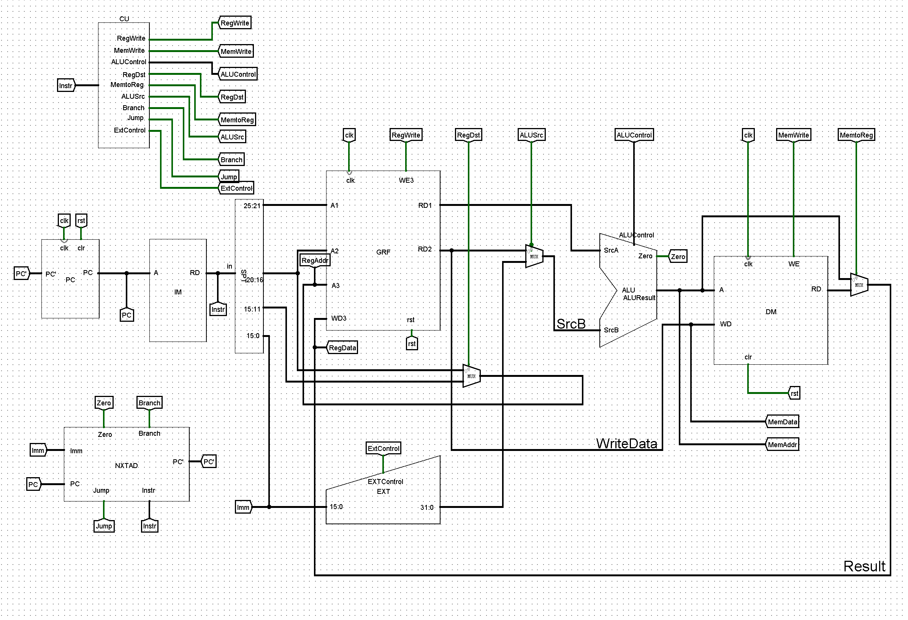
部件
PC(Program Counter)
程序计数器,用于指示指令的位置.
主体为一个寄存器,用于存储指令地址,在时钟上升沿时输出到PC`
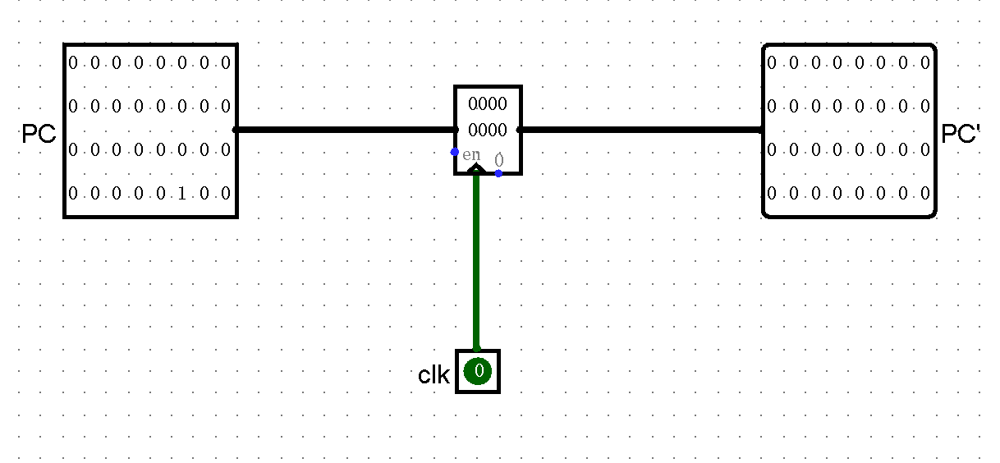
IM(Insturction Memory)
指令存储器,存储指令内容.
主体为一个ROM,通过PC输入地址,将PC所对应的指令输出到Instr.
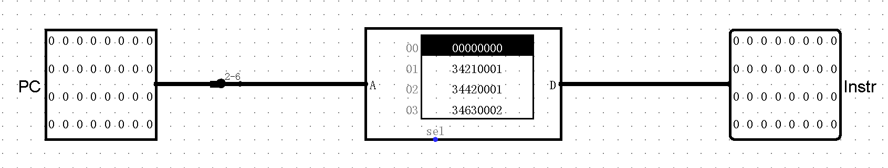
DM(Data Memory)
数据存储器,与CPU直接交换数据的内部存储器
主体为一个RAM,即可读又可写,WE为1时,将WD数据写入到A地址;WE为0时,读出WD地址对应数据到RD
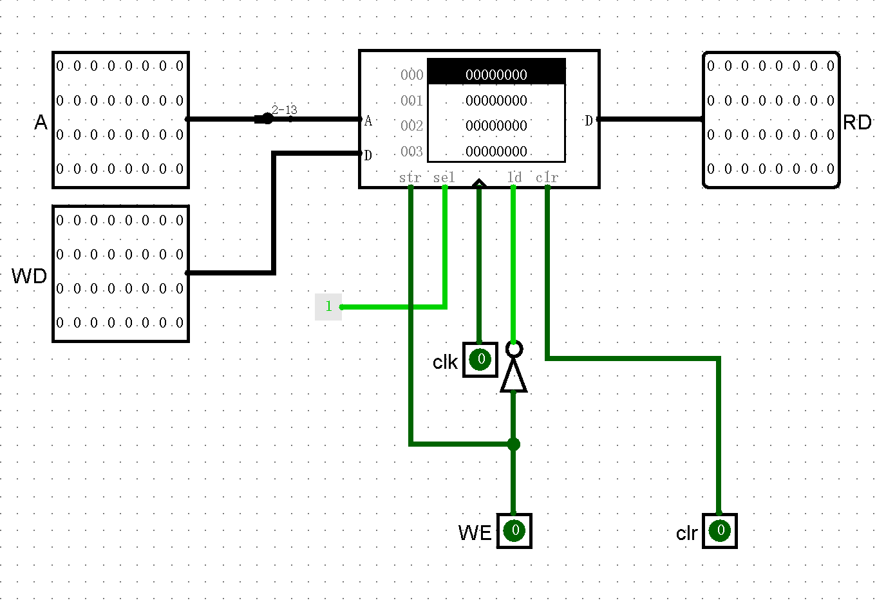
GRF(Register File)
CPU内部的寄存器堆
有32个32位寄存器,通过A1/A2选择寄存器读出到RD1/RD2,通过A3选择寄存器写入数据WD3
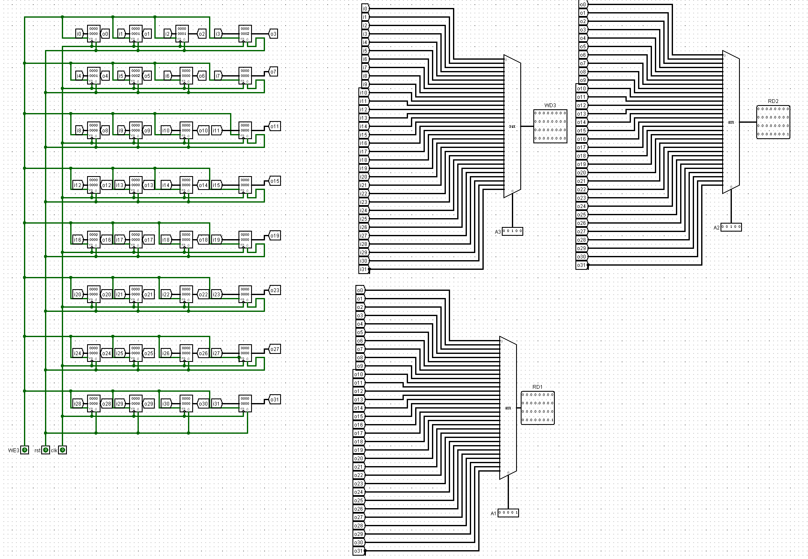
ALU(Arithmetic and Logical Unit)
计算单元,支持多种计算操作
由SrcA与SrcB读入两个操作数,通过ALUControl选择计算类型,输出到ALUResult
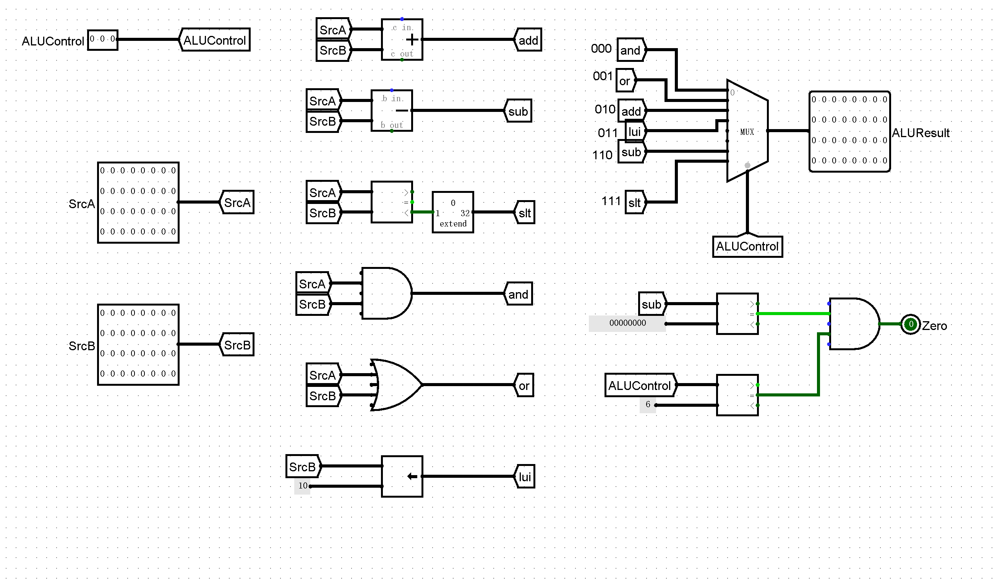
SPT(Splitter)
分线器,分割指令的不同位
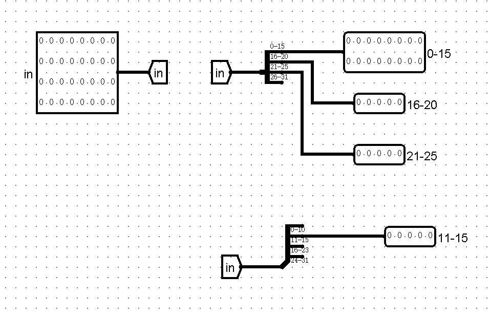
EXT(Extender)
扩位器,当ExtControl为0时,将输入的立即数由16位有符号扩展变为32位;当ExtControl为1时,将输入的立即数由16位零扩展变为32位
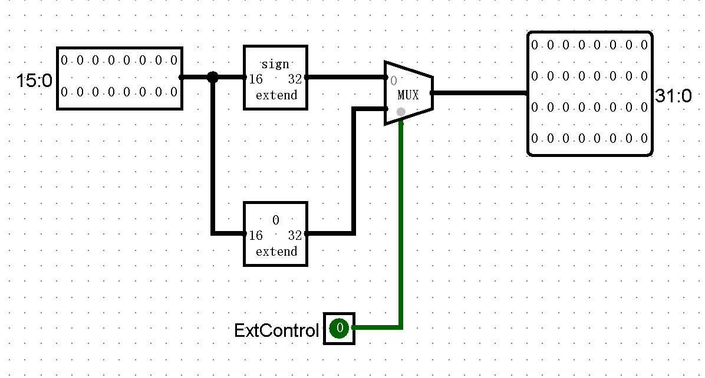
NXTAD(Next Address)
用于计算PC输入的下一个指令地址
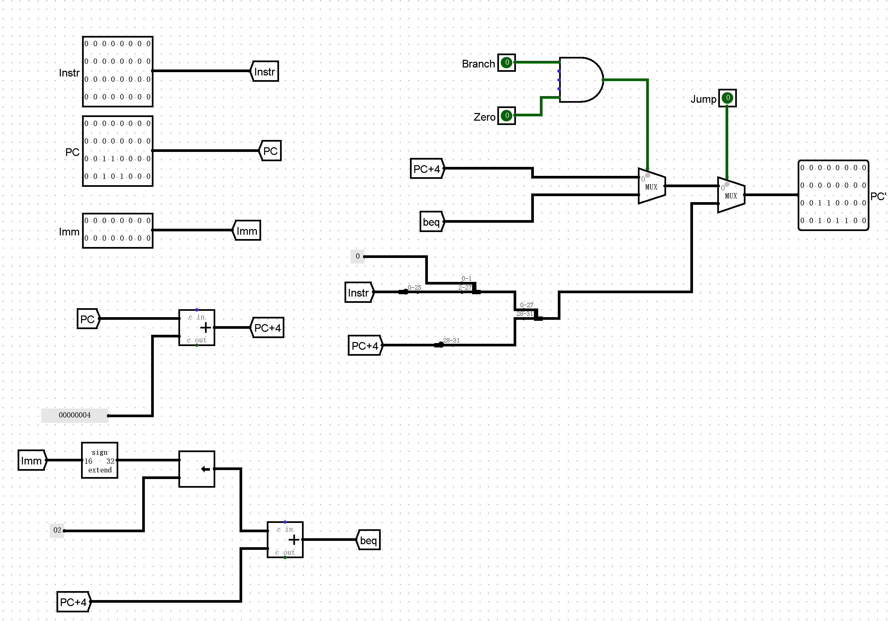
CU(Control Unit)
控制单元,通过输入指令,决定输出信号
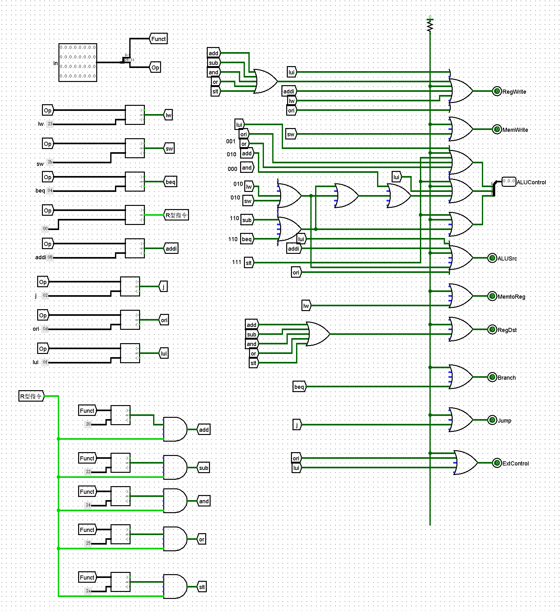
ALU信号表
ALUControl信号 操作 000 与 001 或 010 加 011 覆盖高位 110 减 111 移位 CU信号表
指令 RegWrite MemWrite ALUControl RegDst MemtoReg ALUSrc Branch Jump ExtControl lw 1 0 010(加法) 0 1 1 0 0 0 sw 0 1 010(加法) X X 1 0 0 0 beq 0 0 110(减法) X X 0 1 0 0 add 1 0 010(加法) 1 0 0 0 0 X sub 1 0 110(减法) 1 0 0 0 0 X and 1 0 000(与) 1 0 0 0 0 X or 1 0 001(或) 1 0 0 0 0 X slt 1 0 111(小于置位) 1 0 0 0 0 0 addi 1 0 010(加法) 0 0 1 0 0 0 j 0 0 XXX X X X X 1 0 ori 1 0 001 X 0 1 0 0 1 lui 1 0 011(高位覆盖) 0 0 1 0 0 1 nop X X X X X X X X X 测试方案
撰写MIPS测试文件
使用
ori,nop,add,sub,lw,sw,撰写一个测试用MIPS文件.1
2
3
4
5
6
7
8
9
10
11
12
13
14
15
16
17
18
19
20
21
22
23
24
25
26
27
28
29
30
31
32
33
34
35
36
37
38
39
40
41
42
43
44>ori $0, $0, 10
>ori $1, $0, 11
>ori $2, $0, 22
>ori $3, $0, 40
>ori $4, $0, 2000
>ori $5, $4, 12
>nop
>nop
>nop
>add $6, $5, $4
>add $7, $6, $2
>add $8, $7, $1
>add $9, $8, $0
>add $10, $0, $3
>sw $0, 0($10)
>sw $1, 4($10)
>sw $2, 8($10)
>nop
>nop
>nop
>lw $11, 0($10)
>lw $12, 0($10)
>lw $13, 0($10)
>sub $14, $10, $0
>sub $15, $14, $1
>sub $16, $15, $2
>lui $17, 0xffff
>lui $18, 0x4fff
>lui $19, 0x1
>lui $20, 0x223
>ori $21, $21, 1
>ori $22, $22, 1
>loop:
>sub $22, $22, $4
>beq $21, $22, loop使用MARS获得机器码
将MIPS代码输入MARS中,将文件机器码以十六进制格式导出,并在文件开头添加
v2.0 raw.1
2
3
4
5
6
7
8
9
10
11
12
13
14
15
16
17
18
19
20
21
22
23
24
25
26
27
28
29
30
31
32
33
34
35
36
37
38
39
40
41
42
43
44
45
46
47
48
49
50
51
52
53
54
55
56
57
58
59
60
61
62
63
64
65
66
67
68
69
70
71>3400000a
>3401000b
>34020016
>34030028
>340407d0
>3485000c
>00000000
>00000000
>00000000
>00a43020
>00c23820
>00e14020
>01004820
>00035020
>ad400000
>ad410004
>ad420008
>00000000
>00000000
>00000000
>8d4b0000
>8d4c0000
>8d4d0000
>01407022
>01c17822
>01e28022
>3c11ffff
>3c124fff
>3c130001
>3c140223
>36b50001
>36d60001
>02c4b022
>12b6fffe
>v2.0 raw
>3400000a
>3401000b
>34020016
>34030028
>3c01ffff
>3421ffff
>00012025
>3485000c
>00000000
>00000000
>00000000
>00a43020
>00c23820
>00e14020
>01004820
>00035020
>ad400000
>ad410004
>ad420008
>00000000
>00000000
>00000000
>8d4b0000
>8d4c0000
>8d4d0000
>01407022
>01c17822
>01e28022
>3c11ffff
>3c124fff
>3c130001
>3c140223
>36b50001
>36d60001
>02c4b022
>12b6fffe比对MARS与Logisim模拟CPU的寄存器
经过测试,两者结果相符
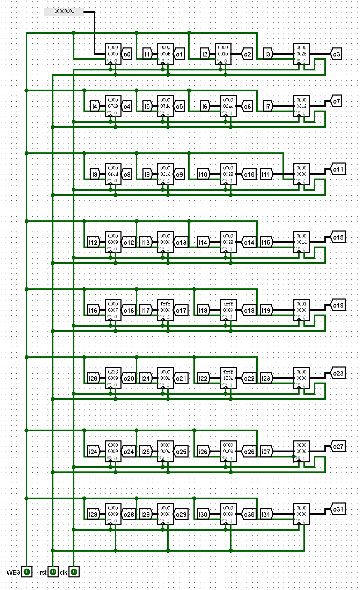
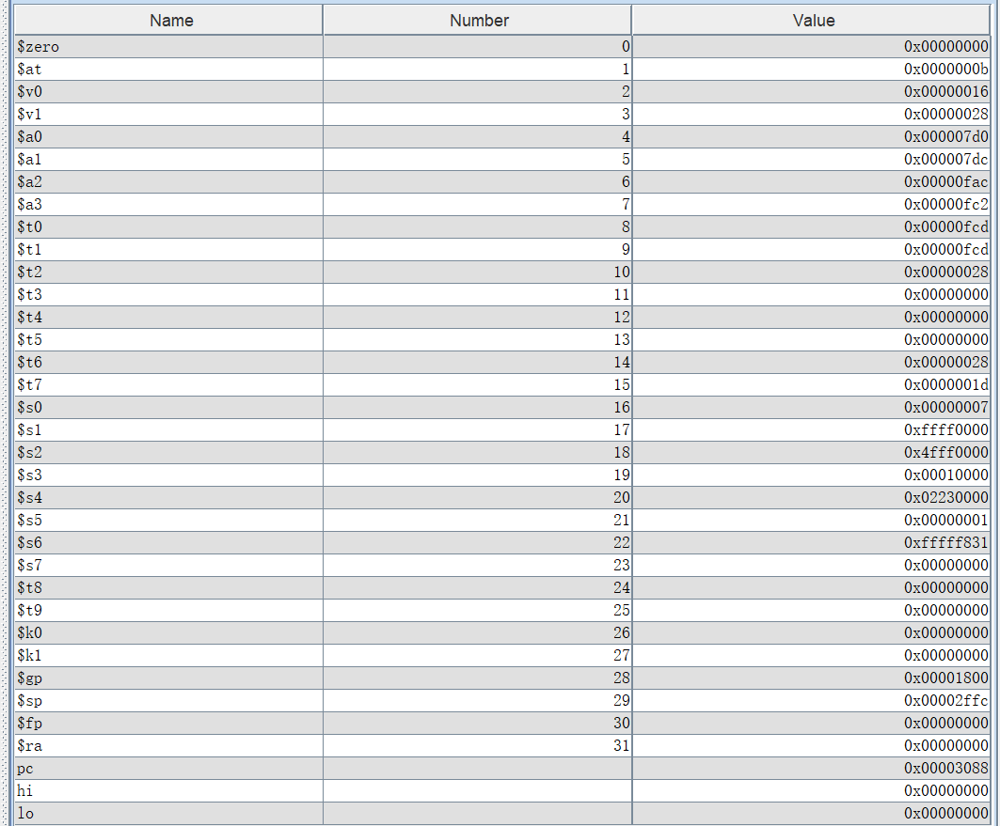
比对DM
Logisim中DM导出结果:
1
2>v2.0 raw
>11*0 b 16Mars中的结果为:
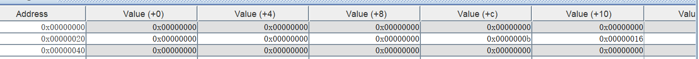
Python自动化测试
Mars Memory文件导出方式
通过
File-Dump Memory to File,Memory Segment选择.data,Dump Format选择Hexadecimal Text1
2
3
4
5
6
7
8
9
10
11
12
13
14
15
16>00000000
>00000000
>00000000
>00000000
>00000000
>00000000
>00000000
>00000000
>00000000
>00000000
>00000000
>0000000b
>00000016
>00000000
>...
>00000000Logisim Memory文件导出方式
右键RAM,选择
save image1
2>v2.0 raw
>11*0 b 16Python测试文件
1
2
3
4
5
6
7
8
9
10
11
12
13
14
15
16
17
18
19
20
21
22
23
24
25
26
27
28
29
30
31
32
33
34
35
36
37
38
39
40>mips_path = "mips.txt"
>logisim_path = "logisim.txt"
>mips_file = open("mips.txt", "r")
>logisim_file = open("logisim.txt", "r")
>mips_mem = []
>lines = mips_file.readlines()
>for line in lines:
line = line.removesuffix("\n")
mips_mem.append(int(line, 16))
>logisim_mem = [0] * len(mips_mem)
>lines2 = logisim_file.readlines()
>line = lines2[1]
>line = line.removesuffix("\n")
>index = 0
>for s in line.split(" "):
print(s)
if "*" in s:
# cnt为10进制,value为16进制
cnt, value = s.split("*")
cnt = int(cnt)
value = int(value, 16)
for _ in range(cnt):
logisim_mem[index] = value
index += 1
else:
value = int(s, 16)
logisim_mem[index] = value
index += 1
>flag = True
>for x, y in zip(logisim_mem, mips_mem):
if x != y:
flag = False
>print(logisim_mem)
>print(mips_mem)
>print("Two documents is the same!!!" if flag == True else "Two documents is different!!!")思考题
- 上面我们介绍了通过 FSM 理解单周期 CPU 的基本方法。请大家指出单周期 CPU 所用到的模块中，哪些发挥状态存储功能，哪些发挥状态转移功能。
IM,GRF,DM发挥状态存储功能,PC发挥状态,EXT,NXTAD,ALU,CU发挥状态转移功能- 现在我们的模块中 IM 使用 ROM， DM 使用 RAM， GRF 使用 Register，这种做法合理吗？ 请给出分析，若有改进意见也请一并给出。
合理,
IM作为指令存储器,只需要在运行前导入指令集,在运行中不会修改,应当使用ROM;DM是数据存储器,在涉及lw,sw的指令中会发生读取和写入操作,应当使用RAM;GRF作为CPU内部存储,每次只会存储一个数,并且需要实现读取和写入,应当用Register.改进方式:
IM,DM加入片选逻辑- 在上述提示的模块之外，你是否在实际实现时设计了其他的模块？如果是的话，请给出介绍和设计的思路。
NXTAD(Next Address Module),用于计算下一个指令的地址.NXTAD需要处理两种情况:一种是正常的通过地址+4获得新地址;另一种是在beq指令中跳转到特定地址.我们使用
Branch,Zero作为控制信号:输入指令为beq时,Branch置1,若指令中的两个寄存器值相等,则Zero置1.当Branch与Zero均为1时,NXTAD模块处理后一种情况,否则为前一种.- 事实上，实现
nop空指令，我们并不需要将它加入控制信号真值表，为什么？
nop不改变任何寄存器或者Data Memory的值,不会产生任何影响,我们无需写入或读取数据- 阅读 Pre 的 “MIPS 指令集及汇编语言” 一节中给出的测试样例，评价其强度（可从各个指令的覆盖情况，单一指令各种行为的覆盖情况等方面分析），并指出具体的不足之处。
对
ori,lui,add涉及的情况较为充分,但缺乏对sub的测试,lw,sw缺乏立即数为负数的情况,未考虑用beq实现循环的情况